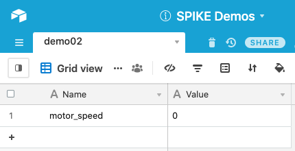
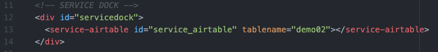
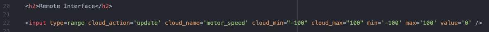
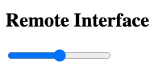
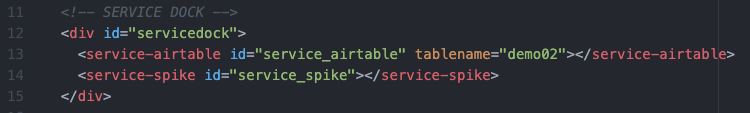
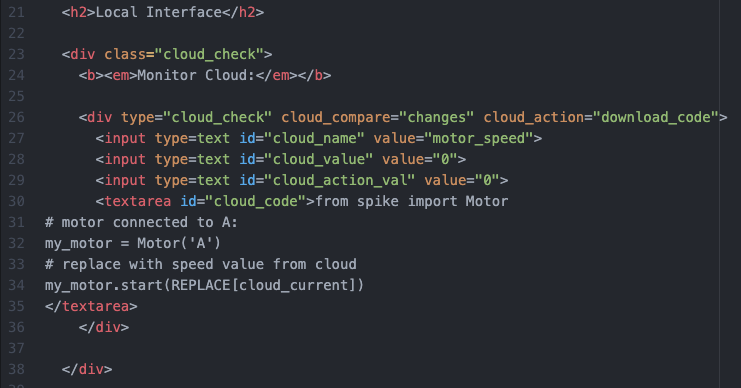
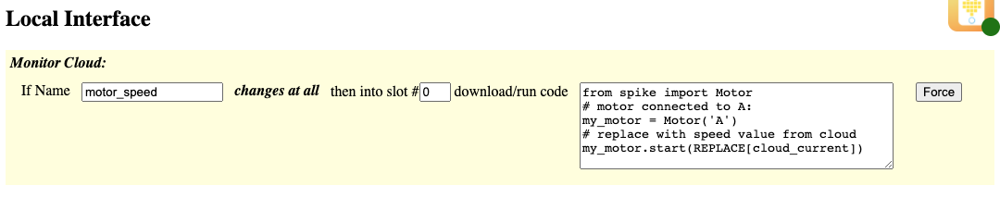

This demo shows how to use range sliders to allow user to select a number.
Be sure to view the overall Documentation for configuring the cloud storage (API key, Base ID, etc) and for more information on how the entire system works.
The "Name" column has an entry "motor_speed" that will hold the updated motor speed from the Range Slider. The "Value" can be a number (although in string format) ranging from -100 to 100.

Service Dock
The remote page has the Airtable Service Dock element. Make sure to update the tablename attribute to match your table name.
Remote Interface
This range slider (
<input type="range" ...>) will update the "motor_speed" to be whatever the current value of the range slider is. Note:
- The "min" and "max" attributes are default to the input range slider: they determine what the min and max are of the webpage element.
- The "value" attribute tells the range slider what default value to start at when the page loads.
- The "cloud_min" and "cloud_max" are extra checks that are added to make sure the value doesn't go outside an "acceptable" range (here: because motor values are only -100 to 100 we want to constrain the value).
This is how the range slider will look on the Remote Page:

Service Dock
The local page has both the Airtable Service Dock element (make sure to update the tablename attribute to match your table name). There is also a single SPIKE Prime Service Dock element.
Local Interface
The local interface is set up to monitor the "motor_speed" value, and will react if it changes at all (to any new value). When it changes, it will then download and run the code into Slot #0 (the "cloud_action_val" value). Note that inside the MicroPython code there is a "REPLACE[cloud_current]" parameter: before downloading the code, this will be replaced with whatever value is currently in the "motor_speed" variable. Thus: the code will start the motor at whatever power (and direction, since -100 to 100) the slider was at.
This is how this element will look on the Local Page:
